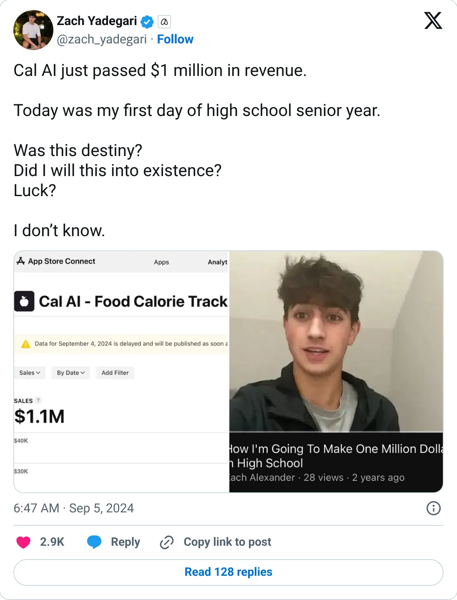
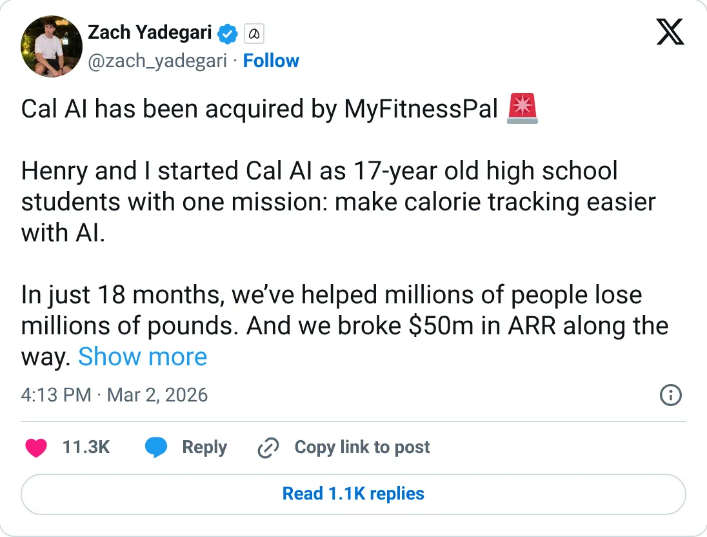

Don't build this
Cal AI
Snap a meal, get calories. The giant already bought the winner.
$50M ARR at acquisition (Mar 2026)
Should you build this
Cal AI turns a photo of a meal into calories. The public trail is the founder's posts: '$1M in total revenue' in September 2024, then '$1M MRR' eight weeks later, then a claimed MyFitnessPal acquisition at '$50M ARR'. TrackAI is the same job on Stripe at about $20k MRR, and there is a stealth calorie app on the same leaderboard. The feature just got bought by a giant. Cloning it now means competing with that giant, using a headline you cannot audit.
Cited from the captured posts, shown below: the earliest captured post (Sep 5, 2024) is the source for “Passed $1M in total revenue”; the latest milestone (Mar 2, 2026) is the source for “Acquired by MyFitnessPal; passed $50M ARR in 18 months”.
Posts this is based on

Passed $1M in total revenue
Open on X

Acquired by MyFitnessPal; passed $50M ARR in 18 months
Open on X
What the product is
Calorie-tracking app: snap a photo of your meal and AI estimates calories and macros. Built by teenagers; acquired by MyFitnessPal.
⚠ Exited: acquired by MyFitnessPal (Mar 2026).